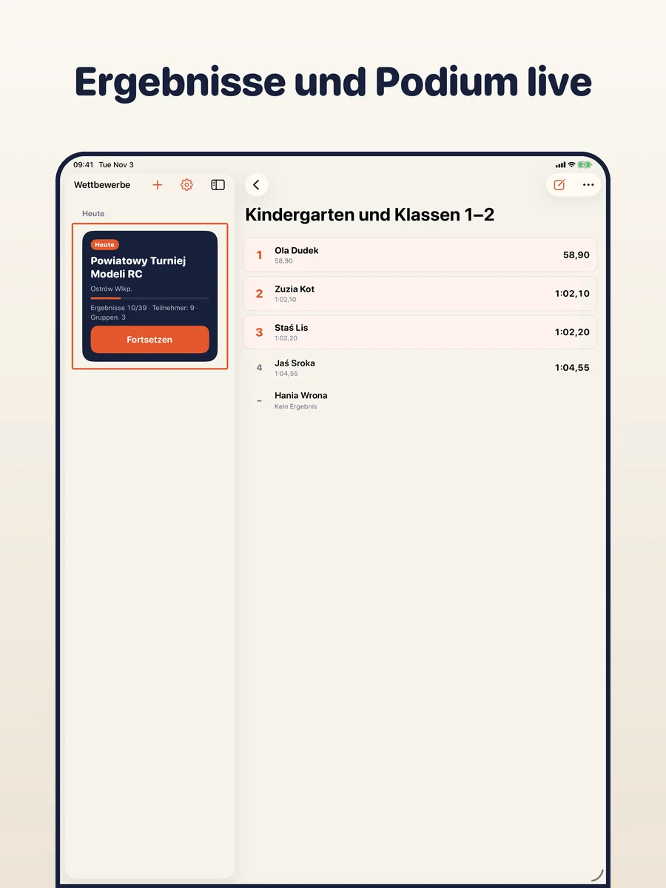
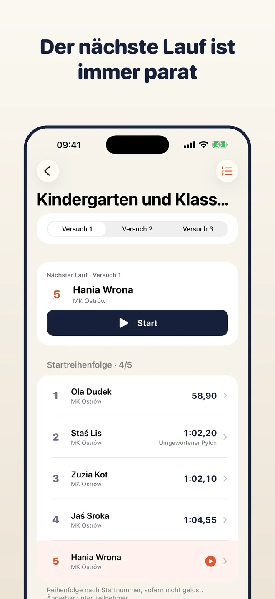
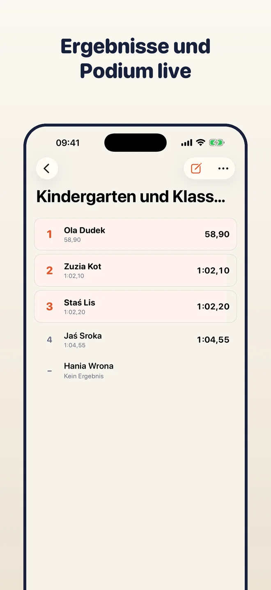
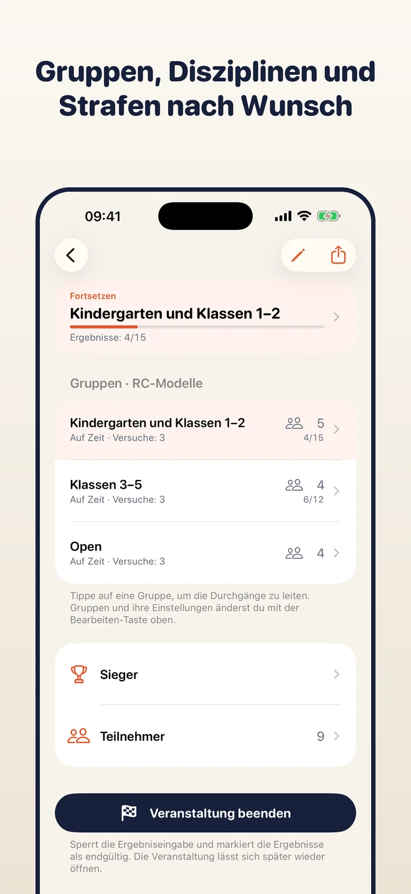
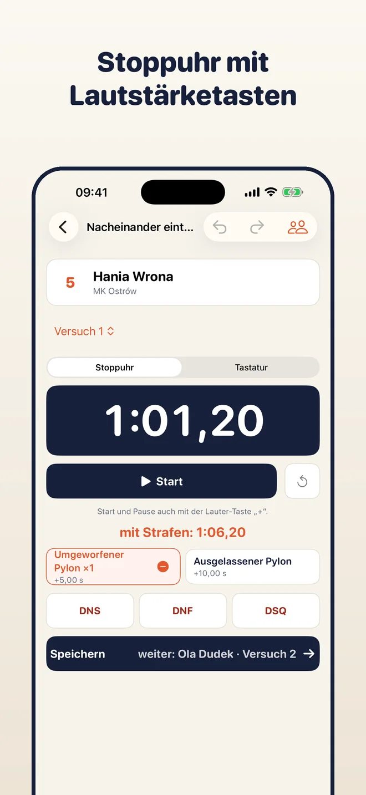
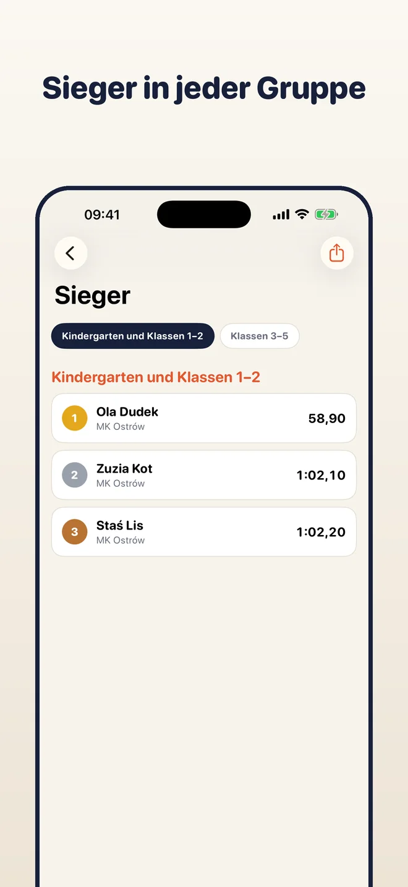
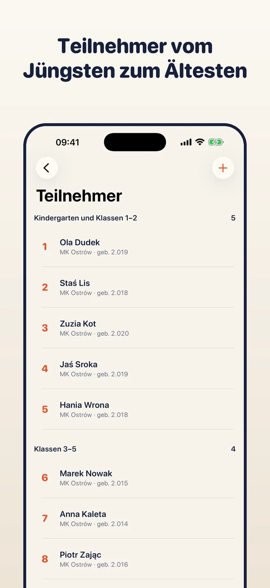

Auf iPhone, iPad und Mac
Eine App, ein Kauf: kostenlos auf allen drei Geräten. Das iPhone misst die Läufe, Mac oder iPad zeigen den ganzen Wettbewerb. Mit iCloud-Synchronisierung (optional) haben sie dieselben Daten.



Lege Gruppen an, füge Teilnehmer hinzu, miss jeden Durchgang und trage die Ergebnisse ein. Platzierungen, Gleichstände, Team- und Gesamtwertung entstehen von selbst, bereit für PDF, CSV oder ein Podiumsbild. Alles bleibt auf deinem Gerät.
iPhone · iPad · Mac

Wähle eine Wettbewerbsart und lege Gruppen an, etwa Altersklassen oder Open. Jede Gruppe hat eigene Versuche, Wertungsart und Strafen.

Die App zeigt, wer als Nächstes dran ist. Starte die Stoppuhr, füge eine Strafe mit einem Tipp hinzu, und die Zeit landet direkt im Ergebnis.

Wertung, Gleichstände und Sieger sind immer aktuell. Exportiere PDF, CSV, ein Podiumsbild für Social Media oder eine Sicherung des ganzen Wettbewerbs.
Bester Lauf, Summe der Besten, Durchschnitt, N aus M Runden, Jurynoten, Sektoren, Etappen. Fertige Beispiele und eigene Regeln.
RC-Modelle, Angeln, Feuerwehrsport und mehr. Eine Person kann in mehreren Gruppen starten, etwa in ihrer eigenen und in Open.
Start und Pause per Tipp oder mit der Lauter-Taste. Die Zeit landet im Ergebnis, Strafen sind Chips darunter.
Startnummern bestimmen die Reihenfolge in der Gruppe. Auslosen oder per Ziehen ändern; der nächste Teilnehmer ist immer sichtbar.
Platzierungen, Gleichstände und unvollständige Ergebnisse werden beim Eintragen berechnet. Sieger je Gruppe, Team- und Gesamtwertung.
Beende den Wettbewerb, um die Ergebnisse als endgültig zu markieren, und öffne ihn bei Korrekturen wieder.
Teile eine Ergebnisliste, eine Tabelle, ein Podiumsbild oder eine .tallyboard-Sicherung des ganzen Wettbewerbs.
Kein Konto, keine Werbung, kein Server von uns. Die Ergebnisse bleiben auf deinem Gerät oder in deinem iCloud, wenn du die Synchronisierung einschaltest.
Eine App, ein Kauf: kostenlos auf allen drei Geräten. Das iPhone misst die Läufe, Mac oder iPad zeigen den ganzen Wettbewerb. Mit iCloud-Synchronisierung (optional) haben sie dieselben Daten.



Tallyboard hat keine Bezahlschranke und keine Grenzen. Wenn die App dir hilft, kannst du die Entwicklung mit einem freiwilligen Trinkgeld unterstützen.
Trinkgelder sind einmalige Käufe, die Apple abwickelt. Die App sieht deine Zahlungsdaten nie.
Die fertigen Regeln sind Beispiele nach üblichen Reglements. Sie ersetzen nicht das offizielle Regelwerk deines Wettbewerbs; der Veranstalter ist für die Regeln und die endgültigen Ergebnisse verantwortlich.
Nein. Es gibt keine Konten und keine Werbung.
Auf deinem Gerät. Wenn du die iCloud-Synchronisierung einschaltest, auch in deinem privaten iCloud. Wir haben keinen Server und keinen Zugriff auf deine Daten.
Für alle, bei denen die Teilnehmer nacheinander antreten und Zeit, Punkte oder Noten über den Platz entscheiden: RC, Angeln, Feuerwehrsport, Jurywettbewerbe, Autocross und mehr. Passen die fertigen Regeln nicht, baust du eigene.
Ja. Schalte die iCloud-Synchronisierung in den Einstellungen ein oder übertrage einen Wettbewerb mit einer .tallyboard-Sicherung.
Polnisch, Englisch, Deutsch, Spanisch und Italienisch.
Kostenlos für iPhone, iPad und Mac. Ohne Konto.
Laden im App Store